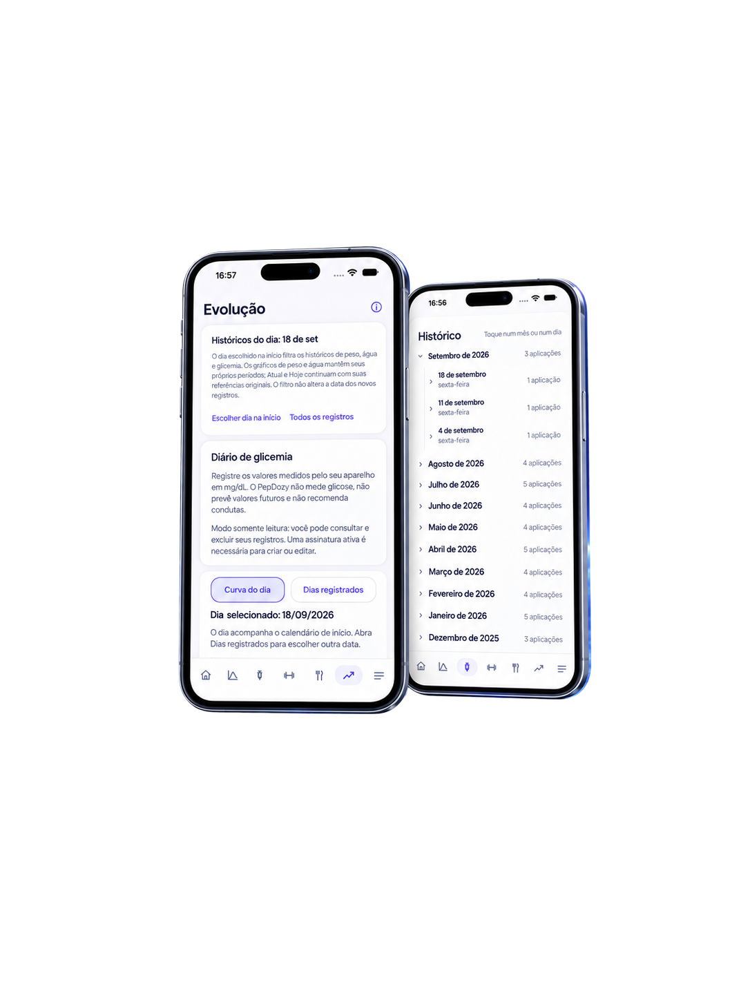
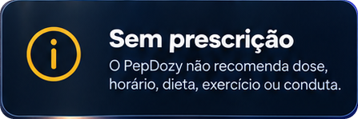

Documento público
Termos de uso e licença
1. Licença do aplicativo: o PepDozy™ utiliza a Licença Padrão de Usuário Final da Apple, também chamada EULA. Consulte o contrato padrão da Apple.
Esta página explica o funcionamento do aplicativo, as assinaturas e os cuidados com seus dados. Ela não substitui o contrato padrão da Apple nem cria uma EULA personalizada.
2. Para que serve o PepDozy™
O PepDozy™ é um diário pessoal para registrar e organizar aplicações de medicamentos GLP-1, estoque, peso, alimentação, água, atividades, sintomas, glicemia medida em aparelho externo e fotos de progresso. Você também pode consultar históricos e gráficos, personalizar lembretes e exportar arquivos.
Confira as informações antes de salvá-las. Os resumos, cálculos de estoque e estimativas dependem dos dados que você registra ou autoriza importar. O saldo do estoque é uma conta sobre os registros, não uma verificação física do medicamento disponível.
3. Limites de saúde e lembretes
O PepDozy™ não diagnostica, prescreve nem recomenda medicamento, dose, aumento de dose, dieta, exercício ou mudança de tratamento. Não substitui médico, nutricionista ou outro profissional de saúde.
A curva do medicamento é uma estimativa educativa baseada nas aplicações registradas e em parâmetros do modelo. Não mede a concentração no sangue, não representa todo o medicamento presente no corpo e não prevê sua resposta individual ao tratamento.
O diário de glicemia guarda valores informados por você a partir de um medidor externo. O aplicativo não mede glicose nem prevê valores futuros. As linhas entre registros próximos são apenas ligações visuais, não medições dos intervalos sem registro.
As metas de alimentação, água e peso são valores informados por você. O app organiza e compara registros, mas não determina nem valida a adequação clínica dessas metas. Os valores do catálogo alimentar são referências e podem variar conforme produto, preparo e porção.
Após registrar uma aplicação, o app pode apresentar uma próxima data baseada no intervalo nominal do produto. Você pode alterar essa data e o horário. Isso não é uma recomendação de tratamento: a dose anterior não é convertida em dose futura, e o lembrete depende de confirmação separada.
Você escolhe os lembretes e, nos campos disponíveis, seu título e mensagem. A entrega depende das permissões, configurações e funcionamento do iPhone; não é garantida em todas as circunstâncias. Siga a orientação do profissional responsável pelo tratamento.
Em caso de urgência, reação grave ou dúvida clínica, procure um serviço de saúde ou o profissional que acompanha você.


4. Assinaturas e acesso aos recursos
O download é gratuito. Criar e editar registros e emitir novos relatórios em PDF exige assinatura mensal ou anual ativa, ou teste gratuito válido. Se a Apple oferecer sete dias de teste grátis e sua conta for elegível, esses recursos ficam disponíveis durante o teste.
Antes da confirmação, a Apple apresenta o plano, a duração, o preço, a moeda e as condições da oferta. A assinatura renova automaticamente até ser cancelada. Ao terminar o teste gratuito, a cobrança segue as condições apresentadas na contratação, salvo cancelamento conforme as regras da Apple.
Consulte ou cancele a assinatura em Gerenciar assinatura no app ou em Ajustes > seu nome > Assinaturas, no iPhone. Apagar o aplicativo não cancela a assinatura. Restaurar compras consulta uma assinatura elegível vinculada à Conta Apple utilizada na compra.
Sem assinatura ativa, você continua podendo ler os registros existentes, fazer backup, exportar registros em CSV e fotos, restaurar e apagar dados. A criação e edição de registros e a emissão de novos PDFs ficam bloqueadas.
Pedidos de reembolso de compras na App Store podem ser apresentados pelos canais da Apple, observadas as condições aplicáveis e seus direitos legais.
5. Privacidade e permissões
O PepDozy™ não exige conta ou login próprios. Seus registros de saúde ficam no iPhone e não são enviados ao desenvolvedor. O aplicativo não possui publicidade, analytics ou telemetria.
A Apple recebe as comunicações necessárias a preços, ofertas, compras e verificação de assinaturas. Essas comunicações não incluem os registros de saúde do PepDozy™. O desenvolvedor não recebe os dados do seu cartão.
O Apple Health é opcional: o PepDozy™ lê somente registros de peso, com sua autorização, e não grava informações no app Saúde. A integração não importa glicemia, calorias ou água.
Notificações, câmera e Fotos dependem das permissões correspondentes. Negar uma permissão não impede o uso dos recursos que não dependem dela. Você pode rever as autorizações nos Ajustes do iPhone.
Os detalhes sobre dados, permissões e exportações estão na Política de Privacidade.
6. Backup e troca de aparelho
Os registros locais e as fotos de progresso ficam fora do backup automático do iPhone. Antes de trocar, restaurar ou apagar o aparelho, gere um backup manual em Menu > Gerenciar meus dados, exporte as fotos separadamente e confira os arquivos no destino escolhido.
O backup dos registros não inclui os arquivos das fotos nem os pesos importados do Apple Health. As fotos têm exportação própria. Os pesos poderão ser lidos novamente se estiverem disponíveis no Health e você autorizar a integração.
O backup pode ser protegido por senha. Guarde-a: nem o aplicativo nem o suporte conseguem recuperá-la. Relatórios PDF, planilhas CSV e pacotes de fotos não recebem criptografia do PepDozy™; compartilhe-os apenas com destinatários e serviços de sua confiança.
7. Compartilhamento e exclusão
Você decide quando exportar e com quem compartilhar. Depois da exportação, a segurança do arquivo depende também do destino escolhido. Apagar um registro no app não apaga cópias já exportadas ou compartilhadas.
Os controles do aplicativo permitem excluir seus dados. A remoção do app pode apagar os registros locais. Como não existe uma cópia remota dos registros mantida pelo PepDozy™, o suporte não pode consultar ou recuperar esses dados em seu lugar. A recuperação depende dos arquivos preservados e das fontes externas que você autorizar, como o Apple Health para peso.
8. Disponibilidade e direitos
Alguns recursos dependem da versão do iOS, das permissões e dos serviços da Apple. Atualizações podem corrigir falhas e melhorar compatibilidade e acessibilidade. Mudanças materiais no tratamento de dados serão informadas conforme a Política de Privacidade.
Estas informações não afastam garantias legais, direitos do consumidor ou direitos de proteção de dados. Os limites educativos do aplicativo não eliminam responsabilidades que a legislação atribua ao fornecedor.
9. Suporte
Para dúvidas sobre o aplicativo, escreva para cabralmoreirao23@icloud.com ou acesse a página de suporte.
Informe a função utilizada e o problema encontrado. Não envie senhas, códigos de verificação, dados bancários, backups, exames ou fotografias clínicas. O canal oferece suporte ao aplicativo, não orientação médica.
10. Marca e pedido de registro
PepDozy™ é uma marca objeto do pedido de registro nº 944932762, protocolado no Instituto Nacional da Propriedade Industrial — INPI em 23/08/2026. Pedido atualmente em análise.
O símbolo ™ indica que PepDozy™ é utilizado e reivindicado como marca. Não representa registro, deferimento, certificado, concessão ou aprovação pelo INPI.